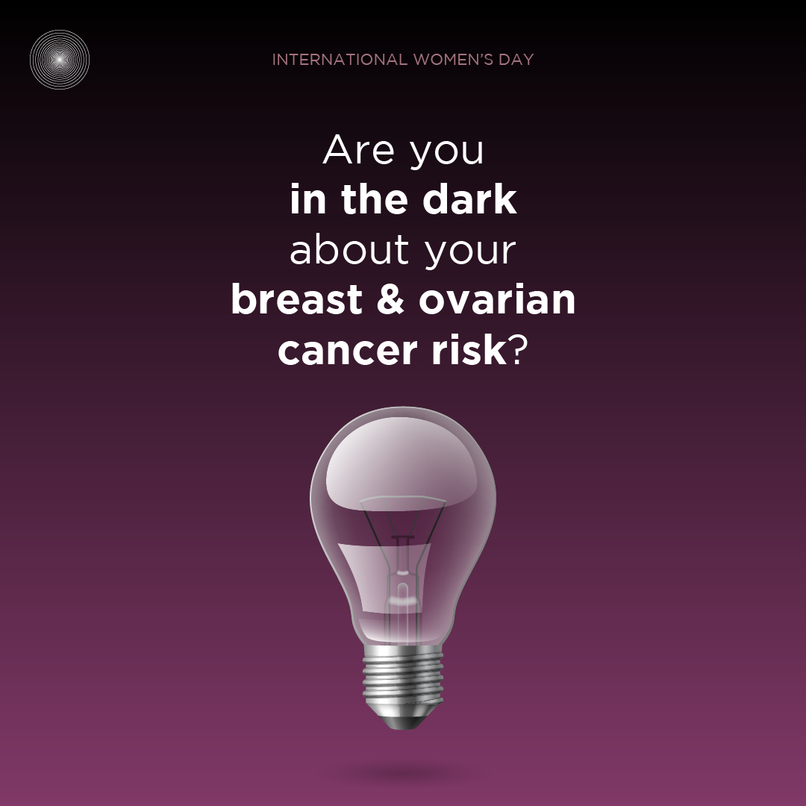
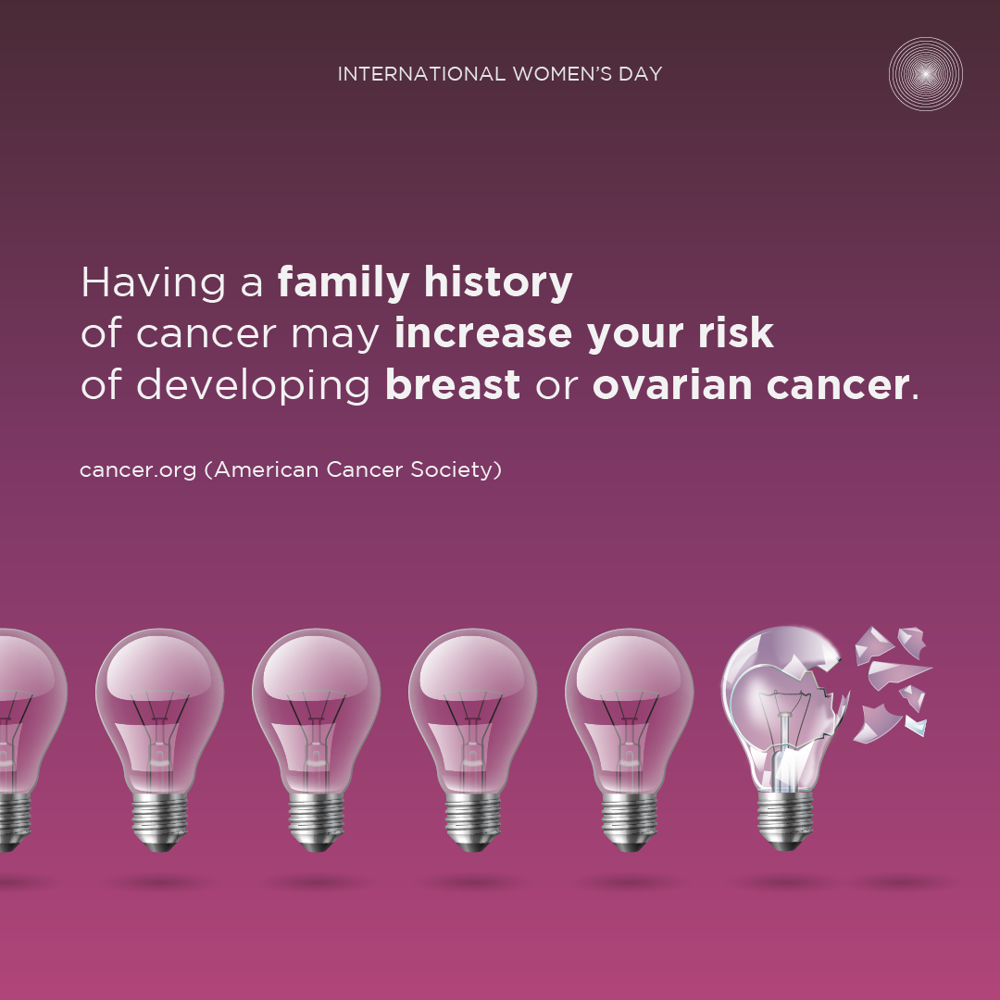
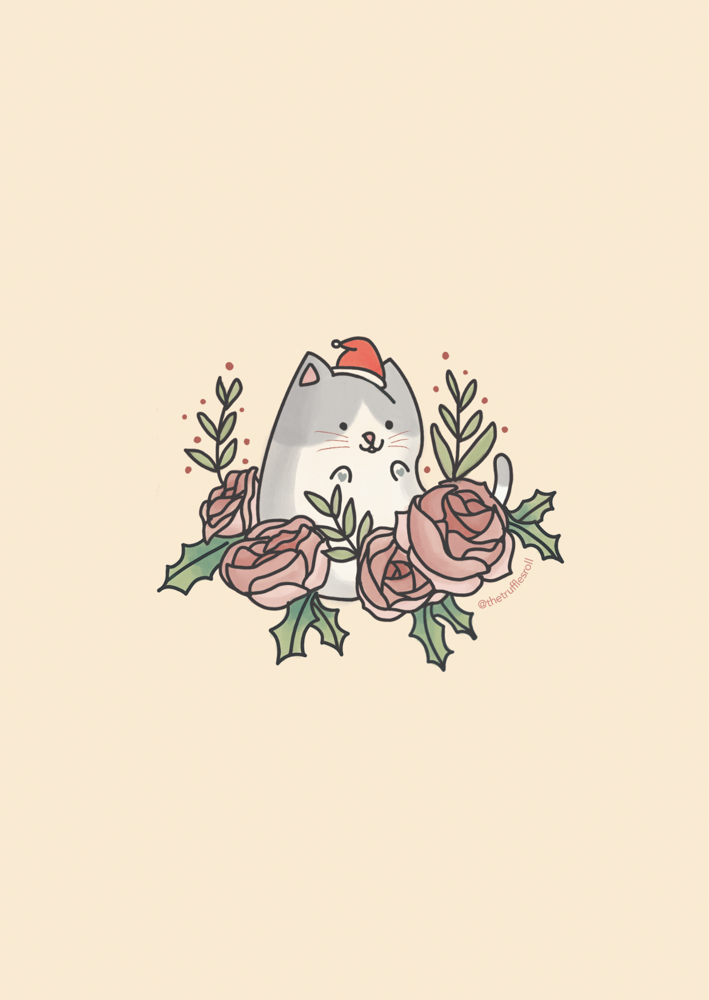
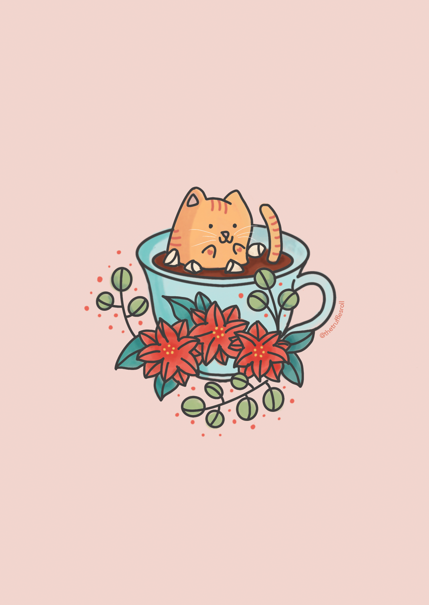
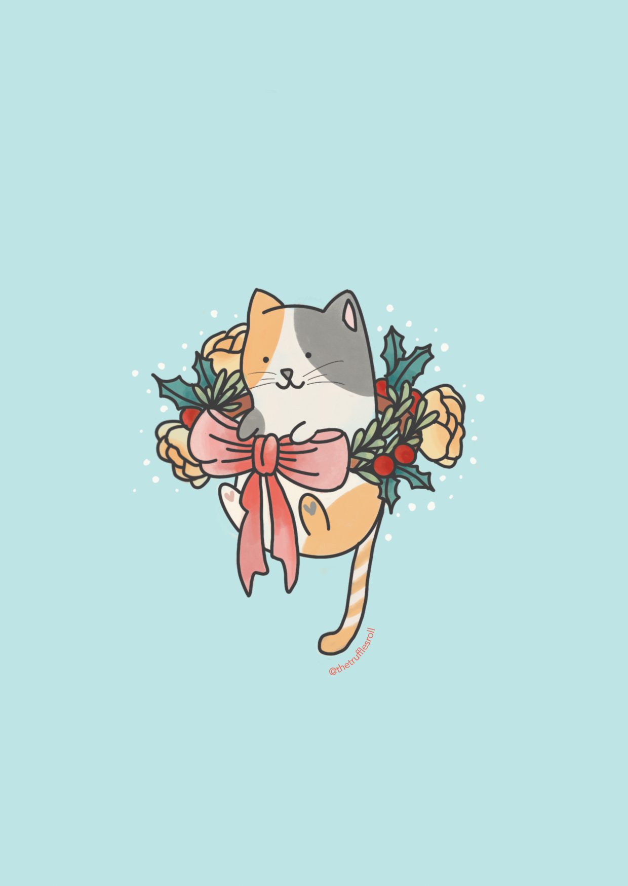
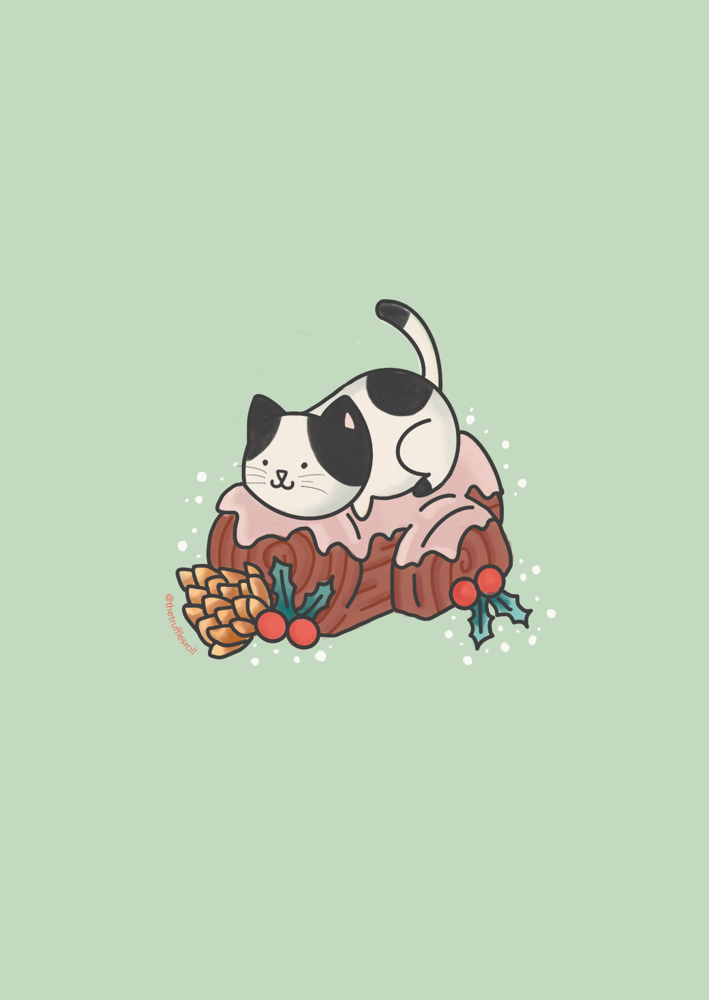
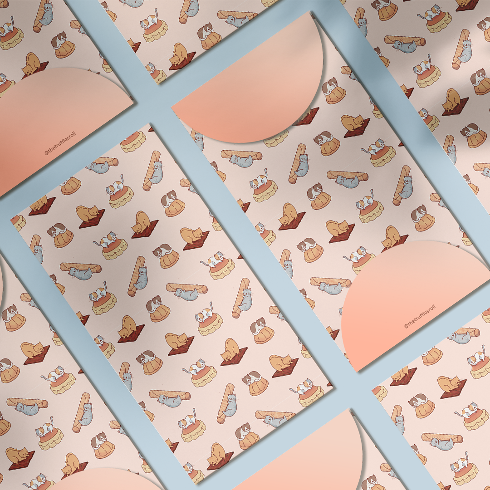
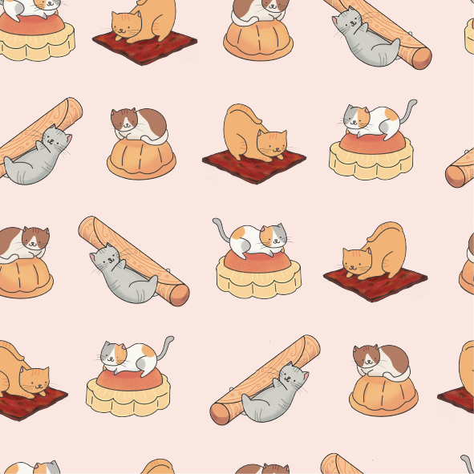

Creative Projects
Corporate Projects
Social media post on breast cancer screening


Social media post on colon cancer testing


Community Projects
Sale of Christmas Cards to fundraise for community cats and rescue organisations




Sale of Angbao packets to fundraise for community cats and rescue organisations


About Me